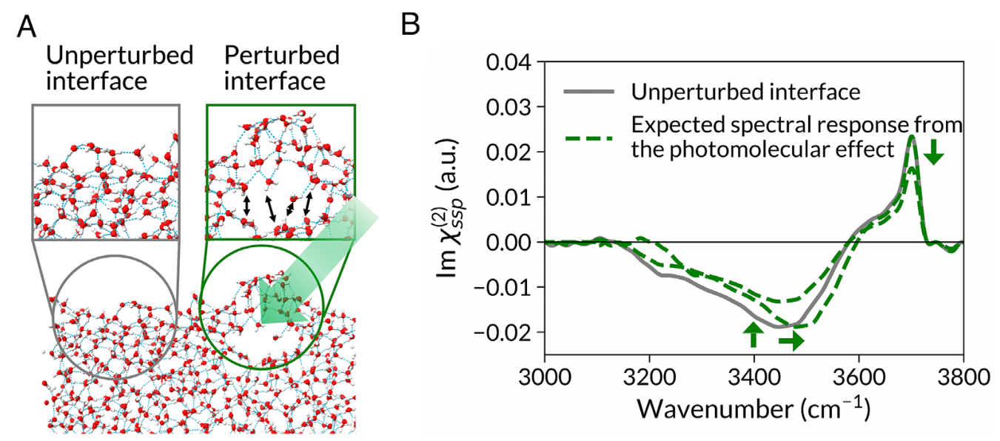
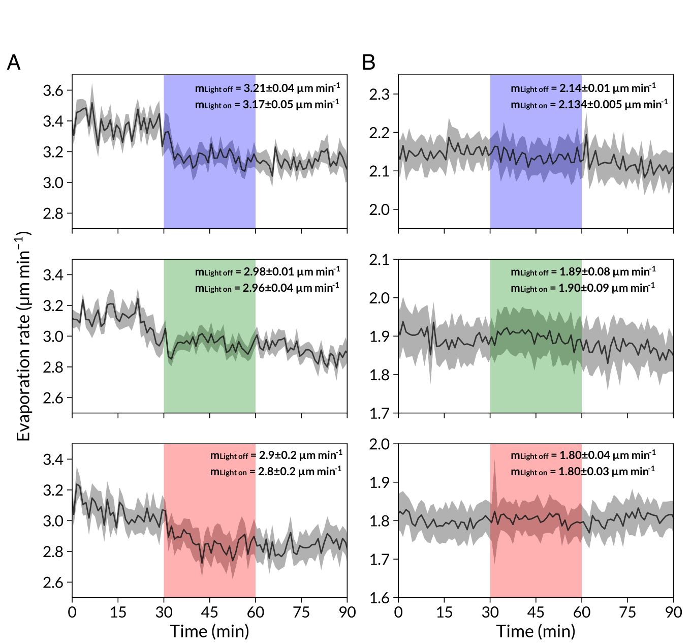
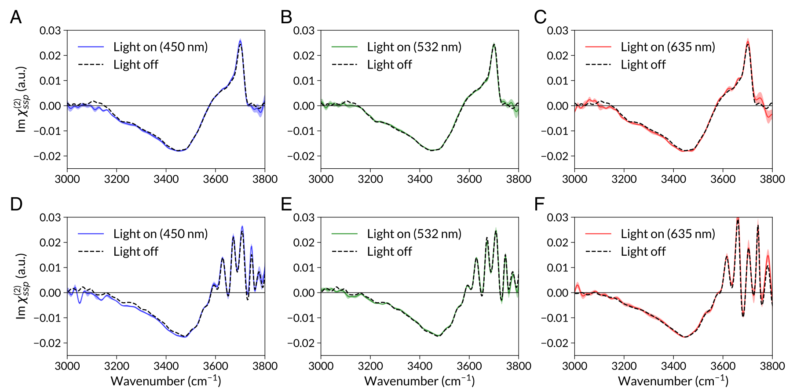
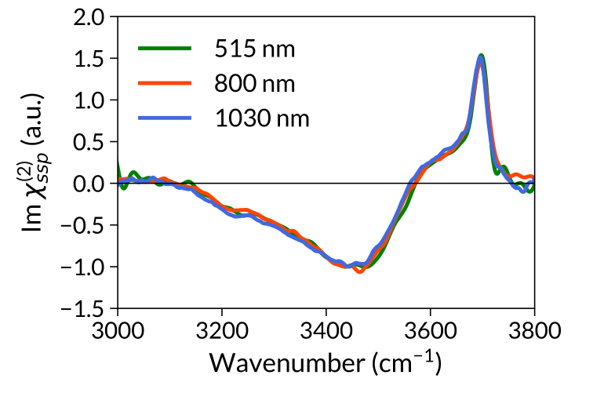

可见光会改变纯水的蒸发率和界面结构吗？
在论文的光照与测量条件下，整体蒸发率和受光区域的界面光谱均未出现可分辨变化。局部光斑面积与检测限约束了结论。
研究背景
传统解释中，光可以通过吸收和加热改变水的蒸发。争论中的“光分子效应”提出了更强的命题：可见光在不依赖通常热效应的情况下，直接作用于界面，把若干水分子构成的团簇带走。
按本文的文献回顾，早先支持该命题的线索包括：水凝胶的蒸发增强、绿光附近较强的波长响应、水面上方的红外或 Raman 差谱，以及液滴顶端的微小形变。这些观测涉及不同的材料、空间采样范围和反演过程，不能直接互换为“纯水界面氢键发生了何种变化”。
作者因此问两个相互补充的问题：受光后净失水是否增加？受光区域最上方几层水分子的氢键与取向是否改变？ 前者用液面高度追踪回答；后者用外差探测振动和频光谱（HD-SFG）回答。高峰值脉冲光则作为第三条测试线，用来放大假设中的瞬时场驱动响应。
研究方法
1. 先看图 1：作者希望用什么信号检验假说？

- 回答的问题： 如果可见光使界面氢键削弱并持续释放水团簇，光谱中应该寻找什么？
- 图中证据或方法： A 是未扰动与假设受扰动界面的示意；B 用绿色虚线画出可能的氢键宽带位移、幅度变化，以及自由 OH 峰变化。灰线与绿线的比较服务于实验判据。
- 支撑的结论： 氢键 OH 宽带和自由 OH 峰是可以监测的界面指标，作者据此把机制争论转成光谱比较。
- 局限与读图注意： 这不是观测到的光分子效应，也不是给定蒸发增强率所对应的定量光谱预测。 图注明确说曲线来自已知界面扰动的类比。不能读成“12% 蒸发增强一定造成图中大小的峰变化”。来源：正文第 2 页。
2. 液面下降为什么能测蒸发？
直观地说，水池失水后液面下降。在横截面积 A 固定、密度近似不变、没有补液、泄漏或持续局部形变时，质量守恒给出：
ṁ = −ρ A dh/dt；面积平均质量通量 j̄ = −ρ dh/dt。
论文图 2 把正的液面下降速率 m = −dh/dt 称为蒸发速率，单位是 μm/min，它不是直接以 kg/(m²·s) 表示的质量通量。这里公式里的 ṁ 才是单位时间失去的质量。
注意这个关系的空间含义：即使探头只读液面上的一个小区域，只要水面迅速恢复近似水平，读到的高度仍主要受整池失水量支配，不自动变成那个小区域的局部蒸发通量。这个区别决定后面的面积稀释问题。
| 项目 | 正文给出的参数 |
|---|---|
| 水样 | Milli-Q 水，电阻率 18.2 MΩ·cm；直径 2 cm 的玻璃槽 |
| 温度 | 每次测量约 22.1 °C，文中称保持恒定；没有在主文给出受光区温升的完整误差预算 |
| 可见连续光 | 450、532、635 nm；各约 4.5 mW；p/TM 偏振；入射角 45° |
| 表面辐照度 | 约 1,000 W/m²，即 0.1 W/cm²；入射辐照度不是吸收热流 |
| 光斑与探头 | 受光面积 4.5 mm²，等效直径约 2.4 mm；共焦采样直径 0.6 mm、面积约 0.28 mm²，位于光斑内部 |
| 湿度 | 干空气吹扫：RH <0.1%；环境湿度：蓝、绿、红光分别约 27%、33%、36% |
| 时间程序 | 平衡 30 min 后，暗 30 min → 亮 30 min → 暗 30 min |
| 位移测量 | Keyence CL-L070；标称分辨率 <0.25 μm，线性度 ±2 μm；两者不是同一类误差 |
| 采样与处理 | 高度每 100 ms 记录；邻近 600 点线性拟合约对应 60 s 窗口；30 min 区间另提取拟合斜率 |
作者用亮灯区间与前后两个暗区间的平均值比较。这样能部分抑制缓慢漂移，但若漂移非线性，或开灯恰好与其他变化同步，单次“暗–亮–暗”仍不足以完成因果分离。
3. HD-SFG：如何只看水面附近的分子？
把一束可调红外光与一束上转换光同时照到界面，可以产生频率为两束之和的光。在电偶极近似下，均匀、各向同性且具有反演对称性的体相二阶响应相互抵消；界面打破这一对称性，因此对界面取向结构特别敏感。这里的“表面选择性”有光学近似和样品条件，不能一般化成所有体系的体相贡献都严格为零。
ωSFG = ωIR + ωup；ESFG ∝ χ(2) EIREup。
普通强度探测偏重 |χ(2)|²；外差探测额外加入已知参考光（local oscillator，LO），从干涉恢复相位信息，因而能讨论复数 χ(2) 的虚部。论文图中的纵轴 Im χ(2) 不是吸光度，也不是水分子数。
OH 伸缩振动可用“弹簧”直观理解：氢键环境会改变 O–H 振动频率。约 3,000–3,600 cm⁻¹ 的宽带主要反映氢键 OH；约 3,700 cm⁻¹ 的窄峰与未形成氢键、朝向气相的自由 OH 有关。峰位、线形和幅度会随氢键环境、取向分布、界面场和光学因子变化。强度变化不能单独换算成自由 OH 数目的变化。
ssp 按 SFG、上转换、红外的顺序标记偏振：s、s、p。探测深度在本文语境中约为最外侧几 Å、2–3 层水分子；SFG 横向探测直径约 80 μm（0.005 mm²），完全位于可见光斑内。因此它比液面下降测量更直接对应局部受光界面。
SFG 样品平衡约 60 min。干条件同为 RH <0.1%，但环境湿度分别约 45%、45%、55%，并非图 2 的 27%、33%、36%。两套测量是相近设计下的互补结果，不应写成完全相同湿度下的同时联测。
具体结果
结果一：图 2 未出现明确的整体蒸发增强

- 回答的问题： 亮灯的 30 min 内，宏观净失水是否出现可辨识、关灯后恢复的增强？
- 图中证据或方法： 左列 A 是干空气吹扫，右列 B 是环境湿度；从上到下为蓝、绿、红光；彩色背景为 30–60 min 亮灯区间。黑线是速率随时间的变化，灰色区域表示图中给出的误差范围。
- 支撑的结论： 六条序列均没有显示显著而一致的向上跃升；环境湿度下约 1.8–2.2 μm/min，干条件约 2.8–3.2 μm/min。作者报告干条件相对变化 −1.8% 至 −0.8%，环境湿度条件 −0.1% 至 +0.7%，并给出约 4.8% 的相对检测限。
- 局限与读图注意： 干条件的基线随时间下降，不能把整段黑线读成严格恒定。灰带与图中“±”未在主文或数据 README 中给出足以复建完整统计检验的定义；6 种条件不等于每种条件有 6 个独立重复。局部光照只覆盖小部分水面，4.8% 也不是已经换算好的局部通量上限。来源：正文第 3–4、7 页。
图中直接标出的数值如下，保留作者的小数位与“±”，不将其自行解释为 95% 置信区间：
| 环境 | 波长 | 暗态 m（μm/min） | 亮态 m（μm/min） |
|---|---|---|---|
| 干吹扫 | 450 nm | 3.21 ± 0.04 | 3.17 ± 0.05 |
| 干吹扫 | 532 nm | 2.98 ± 0.01 | 2.96 ± 0.04 |
| 干吹扫 | 635 nm | 2.9 ± 0.2 | 2.8 ± 0.2 |
| 环境 RH ≈27% | 450 nm | 2.14 ± 0.01 | 2.134 ± 0.005 |
| 环境 RH ≈33% | 532 nm | 1.89 ± 0.08 | 1.90 ± 0.09 |
| 环境 RH ≈36% | 635 nm | 1.80 ± 0.04 | 1.80 ± 0.03 |
这些显示值有舍入，尤其红光干条件精度较粗；不要拿它们的差值重新“精确复现”正文百分比。
结果二：图 3 的局部受光界面光谱基本重合

- 回答的问题： 即使整体蒸发变化不明显，受光区域的氢键 OH 和自由 OH 是否留下结构变化？
- 图中证据或方法： A–C 为干条件，D–F 为环境湿度；每列对应 450、532、635 nm；彩色实线为开灯，黑虚线为关灯。宽带、自由 OH 峰及其相对线形在同条件内大体重合。
- 支撑的结论： 在这套采样、偏振、信噪比与照射条件下，没有发现持续而可分辨的界面 SFG 改变。这是本文对“稳定可见光诱发界面重构”最直接的反证线索。
- 局限与读图注意： 湿条件下 3,600–3,800 cm⁻¹ 的起伏，作者归因于红外光路中的气相水蒸气，不能另认成水团簇峰。作者未在已取得材料中给出完整的最小可检测峰移、幅度变化和由此换算的团簇通量上限。图谱重合约束的是可观测平均响应，不能直接证明所有短寿命微观事件都不存在。来源：正文第 4–6 页。
结果三：图 4 的高峰值脉冲未显示明显谱形变化

- 回答的问题： 如果非热效应主要由瞬时光场驱动，把峰值辐照度提高许多数量级，会不会显著改变界面响应？
- 图中证据或方法： 绿、红、蓝线分别对应 515、800、1030 nm 的上转换光；各条谱以各自的氢键 OH 强度归一化，之后比较宽带形状、峰位和相对自由 OH 响应。
- 支撑的结论： 不同脉冲测量条件下，归一化谱形与相对峰响应相近，没有出现明显的新峰、频移或大幅线形改变。
- 局限与读图注意： 主图显示的是三种上转换条件间的比较，不是完整的同一装置外加泵浦 on/off 延迟扫描；归一化会去掉共同的绝对幅度变化。峰值高也不等于平均吸收功率高。不能只凭这一图推导“所有时间尺度的场驱动过程被排除”。来源：正文第 6–8 页。
| 上转换波长 | 脉冲能量 | 重复频率 | 平均功率 | 正文给出的脉宽 | 作者估计峰值辐照度 |
|---|---|---|---|---|---|
| 515 nm | 0.9 μJ | 50 kHz | 45 mW | >2.6 ps | 1.6 × 10¹⁰ W/cm² |
| 800 nm | 8 μJ | 1 kHz | 8 mW | 约 1 ps | 2.3 × 10¹⁰ W/cm² |
| 1030 nm | 1.4 μJ | 50 kHz | 70 mW | 约 2.6 ps | 2.1 × 10¹⁰ W/cm² |
平均功率 P̄ = Epulse f；峰值辐照度约为 Epulse/(Aspot τ)，精确值还取决于空间、时间轮廓。相对于连续光 0.1 W/cm²，这些估计值高约 11 个数量级；电场幅值按 √I 缩放，不是按 I 线性缩放。
术语核对：摘要用了 femtosecond pulses，但第 6 页实际列出的上转换脉宽是皮秒量级；第 7 页提到约 100–200 fs 的红外探针。 报告保留各束光的区别，不把所有脉冲统称为飞秒。515 nm 是可见光，800 与 1030 nm 属于近红外。
关键机制：证据链成立到哪里？
作者的机制检验链是：可见光驱动团簇逸出 → 界面氢键断裂、OH 取向或自由 OH 分布改变 → 界面光谱改变，同时净蒸发增加。两端均未看到可辨识变化，因此作者认为强的、本征非热机制受到严格限制，并把复杂材料中的较大效应更多归于热学或几何因素。
可以直接接受的观察： 本文展示的宏观速率没有明确增加；局部受光区的 on/off SFG 没有明显差异；三种高峰值条件的归一化谱形相似。
需要模型支撑的解释： 特定大小的额外蒸发通量，是否必然产生足够大的、能被 SFG 看到的稳态结构变化？作者图 1 是类比，没有给出完整转换关系。
一个帮助理解缺口的最小模型是：
npert ≈ Revent τpert。
这不说明光分子效应成立。它说明没有检测到变化与所有可能机制不存在之间仍有可量化的步骤。反过来，把复杂体系的异常统归于热效应，也需要分别测量其吸收、温度场与传质边界，本文没有逐一完成这些替代解释的验证。
独立核查一：局部照明与整体检测限
直径 20 mm 的水面面积约为 π × 10² = 314 mm²；受光面积仅 4.5 mm²。因此受光比例：
f = Alight/Awater ≈ 4.5/314 = 1.43%。
在“初始蒸发通量均匀、未照区域不变、水面保持近似平整、光只改变受光区通量”的简化假设下，局部增强 α 对整体液面下降速率的相对影响为：
Δm/m ≈ f α。
| 假设的受光区局部增强 | 对应的整体速率变化 | 与作者约 4.8% 检测限的关系 |
|---|---|---|
| 12% | 约 0.17% | 低于该整体检测限 |
| 40% | 约 0.57% | 低于该整体检测限 |
| 约 335% | 约 4.8% | 仅为按面积模型反推的示例尺度，非正式统计上限 |
推断边界： 上表不是对前序实验的重新拟合，也没有证明本实验确实漏掉了一个效应。真实水面有边缘通量不均匀、气流、液体补偿流与可能的局部形变，必须用实际响应核修正。但是，仅凭“高度探头在光斑里面”并不能消除整体失水的面积平均；因而论文用 4.8% 检测限直接比较文献中的局部或不同面积定义的 12%/40%，至少需要额外说明分母和传递关系。
SFG 探头完全落在受光区，它不受同一种水面面积稀释。因此这一检查主要削弱图 2 对局部增强幅度的排除能力，不会自动推翻图 3 的局部光谱观察。
独立核查二：作者公开数据告诉了我们什么？
| 文件对应图 | 数据结构 | 检查结果与边界 |
|---|---|---|
| Fig. 2A、2B | 各 90 行 × 9 列；每种光色有时间、速率、误差列 | 无空值、无完整重复行；时间约 0.492–89.492 min，间隔 1 min；每个暗/亮窗口各 30 个点 |
| Fig. 3A–C、3D–F | 各 1024 行 × 12 列 | 无空值、无完整重复行；提供波数与 Im χ² 曲线，不是独立重复实验集合 |
| Fig. 4 | 1340 行 × 6 列；3 组波数–响应配对 | 1030、515 nm 各 1024 个有效配对，800 nm 为 1340 个；短列尾部填空产生 1264 个空单元格，不能视为随机漏测 |
描述性复算与基线敏感性
对 Fig. 2 的每色 90 点，分别计算 0–30、30–60、60–90 min 的速率算术平均，以两段暗态均值的平均作为基线：
δ = [m̄on / ((m̄pre + m̄post)/2) − 1] × 100%。
| 条件 | 前暗均值 | 亮态均值 | 后暗均值 | δ（两侧暗态基线） | 仅以前暗为基线 | 仅以后暗为基线 |
|---|---|---|---|---|---|---|
| 干，450 nm | 3.375 | 3.173 | 3.135 | −2.52% | −5.99% | +1.20% |
| 干，532 nm | 3.106 | 2.950 | 2.905 | −1.84% | −5.02% | +1.55% |
| 干，635 nm | 3.057 | 2.862 | 2.836 | −2.86% | −6.38% | +0.93% |
| 环境，450 nm | 2.149 | 2.137 | 2.117 | +0.18% | −0.55% | +0.93% |
| 环境，532 nm | 1.894 | 1.899 | 1.868 | +0.97% | +0.27% | +1.68% |
| 环境，635 nm | 1.799 | 1.804 | 1.805 | +0.11% | +0.28% | −0.06% |
前三个均值列单位均为 μm/min；每格来自该序列的 30 个时间点，不是 n=30 次独立重复。原始采样经局部拟合和时间演化，点间不能未经检验就视为独立。
这个复算仍未看到明显的大幅增强，但发现干条件前后暗态均值下降约 6.47%–7.24%；仅换用前暗或后暗作分母，就会改变亮态差值的符号。这说明漂移处理是读图要点。
局限与需要核实的问题
| 问题 | 当前能确认什么 | 还需要什么 |
|---|---|---|
| 宏观测量覆盖面积 | 主文给出 4.5 mm² 光斑与 2 cm 槽 | 真实受光区域、液面响应与局部/整体通量映射；全水面照明对照 |
| 检测限 | 作者称相对斜率检测限约 4.8% | 独立重复数、误差定义、拟合协方差、漂移与自相关处理、显著性/等效性阈值 |
| SFG 零结果 | 同条件 on/off 谱线近似重合 | 定量的峰位/幅度检测阈值、正对照、从团簇通量到光谱变化的模型 |
| 高峰值脉冲 | 三种条件的归一化谱形相近 | 绝对强度标定、同装置强度扫描、独立泵浦及延迟扫描；脉宽与空间轮廓核实 |
| 不同环境的可比性 | 两套实验均测干/环境条件 | 图 2 与图 3 的实际湿度不同；需核对界面温度、气流和气相边界层 |
| 对复杂材料的外推 | 纯水平面提供有价值的参考 | 水凝胶、孔隙、曲率、溶质和吸收体系须各自控制变量；本文没有直接检验所有体系 |
| 补充材料 | 主文引用 S1 装置、Note S1 校正、S2/S3 校正后光谱 | — |
合适的引用表述： “Chen 等在若干可见光照明与湿度条件下，未检测到纯水平面整体蒸发速率和局部界面 SFG 响应的可分辨变化，为相关非热机制提供了实验约束。”
不宜采用的表述： “该论文已经证明一切光分子蒸发都不存在”，或“所有材料中的可见光蒸发增强都已被证明仅来自加热”。